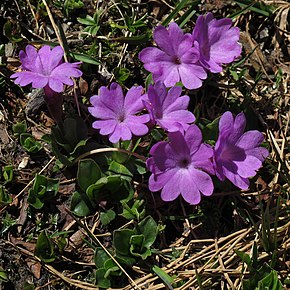

La Primevère à feuilles entières (Primula integrifolia) est une espèce de plantes herbacées vivaces de la famille des Primulacées.
Les primevères à feuilles entières
Primula integrifolia
Description
Primula integrifolia est une plante hermaphrodite, plus ou moins velue, glanduleuse, visqueuse, de 3 à 6 cm de hauteur.
Ses feuilles se présentent en rosettes basales, à limbe lancéolé ou ovale, vert vif, entier, à bords velus, atténué en pétiole ailé.
L'inflorescence, présente en juillet-août, est une ombelle simple comprenant deux ou trois fleurs, ou des fleurs solitaires, très brièvement pédicellées, sur un pédoncule dépassant sensiblement les feuilles ;
involucre à bractées linéaires, atteignant au moins la moitié de la longueur du calice. Le calice est circulaire, non anguleux, glanduleux, à dents ovales-obtuses.
La corolle est rose ou lilas, à tube une fois plus long que le calice, à cinq lobes profondément divisés.
Le fruit se présente sous forme de capsule beaucoup plus courte que le calice.
La pollinisation est entomogame et la dissémination barochore.
Son habitat correspond à des combes à neige et des pelouses rocailleuses, situées entre 1 900 et 2 700 m. La plante est assez commune dans l’Est et le Centre des Pyrénées, très rare en Savoie1.
